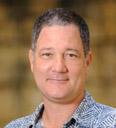
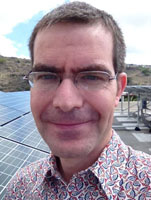
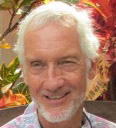
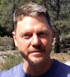

About
Technological advance has markedly reduced the cost of renewable energy, particularly wind and solar. But since these power sources are intermittent and less controllable than traditional fossil fuel power plants, we will need new institutions to manage them in an efficient and socially regarding way. To some extent, we are hamstrung by the institutional history connected to traditional power generation. Hawai‘i, though rich in renewable energy, is isolated and therefore lacking in ability to use transmission to help achieve its ambitious renewable energy goals. This fact puts the state on the bleeding edge of these institutional and technological challenges.
Institutional change tends to lag technological change. Our aim is to narrow the time lag between technological change and the institutional changes needed to make better use of advancing technology in the energy sector. If we can help navigate the required institutional changes, then in this small but crucial way, our remote islands might help the world reduce fossil fuel emissions and limit the extent of global warming.
Our group is a diverse mix of faculty at the University of Hawai‘i at Mānoa, plus a few others from the community intimately involved with our renewable energy transition. We call ourselves the Governing Green Power Steering Group. At present, our group is comprised of:

Carl Bonham
Director
the University of Hawai‘i Economic Research Organization (UHERO)
Makena Coffman
Professor
and Chair
Department of Urban Planning, and UHERO Affiliate, University of Hawai‘i at Mānoa
Carl Freedman
Consultant
specializing in public utility regulatory affairs

Matthias Fripp
Assistant
Professor
Department of Engineering, and UHERO Affiliate, University of Hawai‘i at Mānoa
Mark Glick
Specialist
Hawai‘i
Natural Energy Institute, University of Hawai‘i at Mānoa
Isaac Moriwake
Attorney
EarthJustice

Dick Pratt
Professor Emeritus
Public Policy
University
of Hawai‘i at Mānoa

Michael Roberts
Professor
Economics,
Sea Grant and UHERO Affiliate, University of Hawai‘i at Mānoa

Sherilyn Wee
Economist
Office
of Consumer Advocacy, State of Hawai‘i and UHERO
By design, we are a diverse bunch, and while we share the goals described above, we possess a a range of viewpoints about how to achieve those goals. Views expressed here are those of the individual authors, not necessarily those of the University of Hawai‘i or other institutions with which any of us are affiliated, or of our group as whole. To further broaden our views, comments from the community are welcomed.